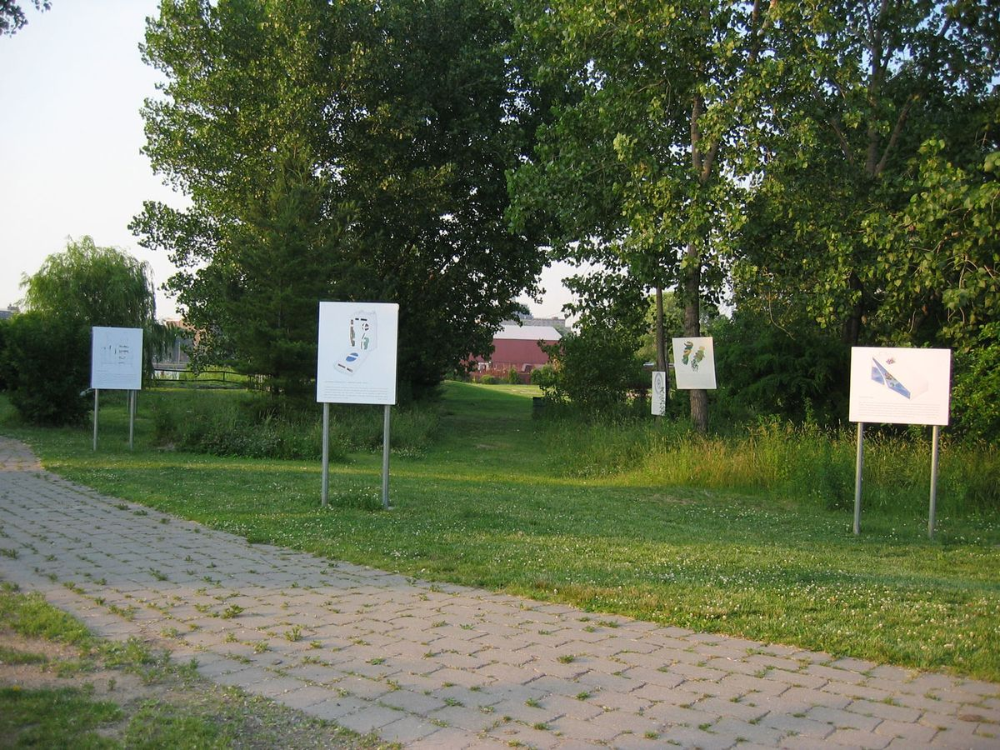
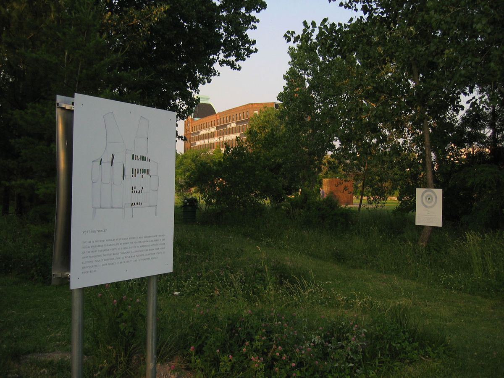
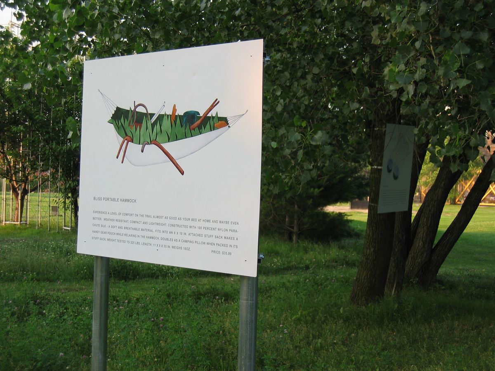
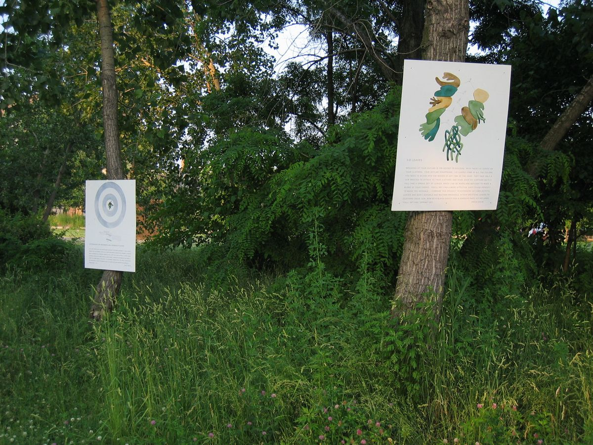
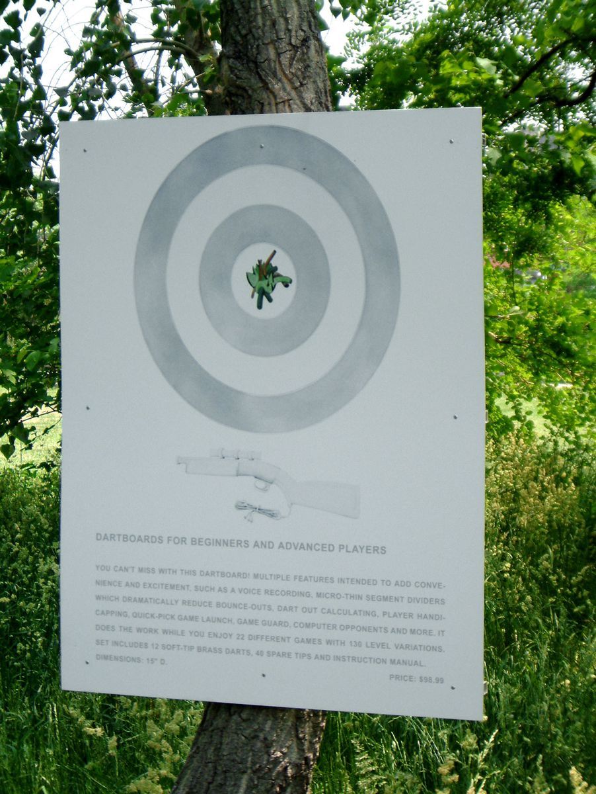

Survival Systems, Socrates Sculpture Park
Field: Science, Technology and Nature, Socrates Sculpture Park, New York, 2004. Curated by Alyson Baker
Survival Systems, 2004. Nine pieces, digital prints mounted on aluminum, ranging from 76x244 to 97x244 cm (30x96 to 38x96 in.), installed outdoors at Socrates Sculpture Park, Long Island City, New York.




